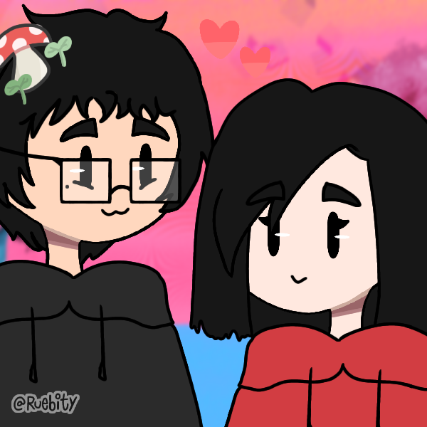

Holis mi corazón c:
Mediante la presente, quería hacerte saber que siempre estoy pensando en ti, todo el tiempo. Con esta cartita, quiero que recuerdes que no estás sola, que siempre estoy aquí para ti, y que, sobre todo, siempre estoy esperándote. Has demostrado ser la chica más fuerte del mundo una vez más, y, si bien m muero de preocupación a cada momento, sé que todo saldrá bien. Tú puedes con todo, mi amor, y no olvides que aquí estoy para ayudarte en cualquier cosa que necesites.
Te amo corazón, y recuerda que "you are my sunflower" ❤️.

Psdt: Recuperate pronto mi amor, que aún debemos ver la última pelicula de Crepusculo :c